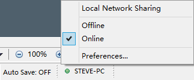

Redesigned Local Network Sharing
Local network sharing is designed to share the mind map among people who are in one local network, esp. one office. It is very simple and effective. Everybody can share their works with one click only. Then the connected colleagues will read the latest file anytime. And more, we can even push the messages with the shared maps.
Connect
To make XMind more secure, we need to connect the sharer before view his mind map, and connect the receiver before sharing him our mind map.
- Launch XMind, and click "View - More - Local Network Sharing"
- Click the "Connect" button under the target person within the Local Network Sharing view
- Click the "OK" button on the coming dialog
- Then, the target person will receive an invitation with two options, "Ignore" and "Accept"
- Once the target person click "Accept", you and the target person can view the shared mind map each other

Share an opened Map
- Launch XMind, open a map.
- There are two ways to share this map,
- Choose "File > Share in Local Network" on the menu.
- Click "Share in Local Network" button on the bottom.
- Authorize all people, or only the selected people to access the mind map. Also, we can add some message to notify the receivers.
- Then the Local network sharing view will be shown. And this map will be there with all other shared maps.
Share an unopened Map
- Launch XMind
- Choose "View -- Local Network Sharing" from menu to Open the Local Network Sharing view.
- Click the plus button on the view toolbar
- Select the existing file from your driver and click OK.
After sharing a map, all your modification on this map will be shared at the same time. So your colleagues can read
your latest map asap. And Yes, you can read others' map too. Just please click the shared map in this Local Network Sharing view.
Then your XMind will get a copy of that map and open it automatically.
It's simple and fast.
Normally, all users will be shown and available after enabling the local network sharing in the preferences. Then, people can share map with me and send message to me. But we may not want to be interrupted anytime. So here we can set the Online/Offline status.
Just please click the status button on XMind bottom toolbar, then we will see Local Network Sharing, Offline, Online, and Preferences... options. Choosing offline will make sure we will not receive any message from the local network.
Local Network Sharing preferences
Local Network Sharing has a separated page in the preferences dialog (Edit -- Preferences -- Local Network Sharing). Here, we can set the computer name in the local network, and disable/enable this Local network sharing service.
Bonjour serviceLocal Network Sharing feature requires the Apple Bonjour service. So when XMind runs this feature and finds no Bonjour on the computer, XMind will ask if installing Apple's Bonjour or not. Now, we can press Yes to install it. Then we can enjoy this great local network sharing service.
PS: People, using the version before XMind 6 and later versions, can't view the mind map of XMind 6 and later versions users. However, XMind 6 and later versions users can view the shared mind maps of XMind 2013.